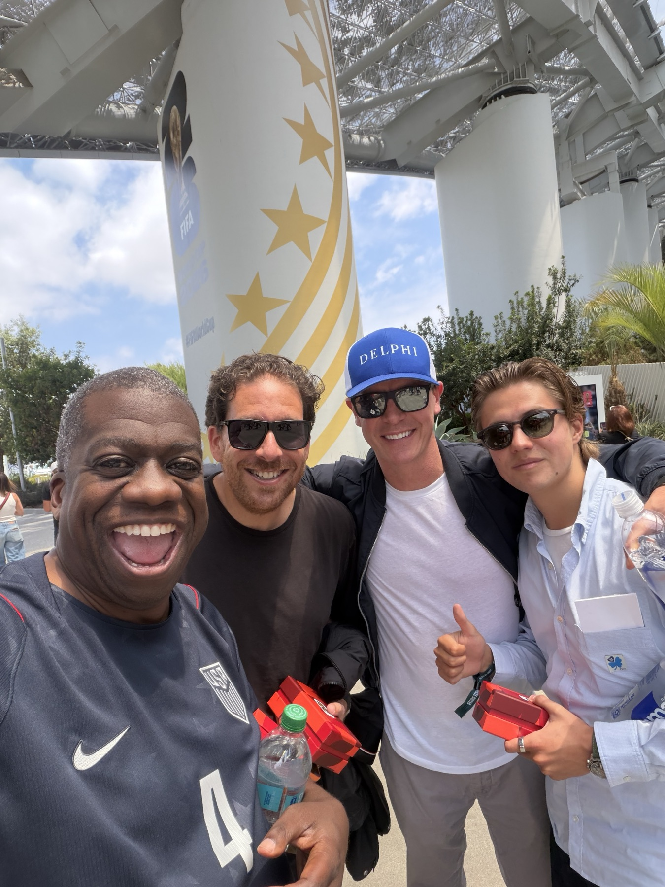
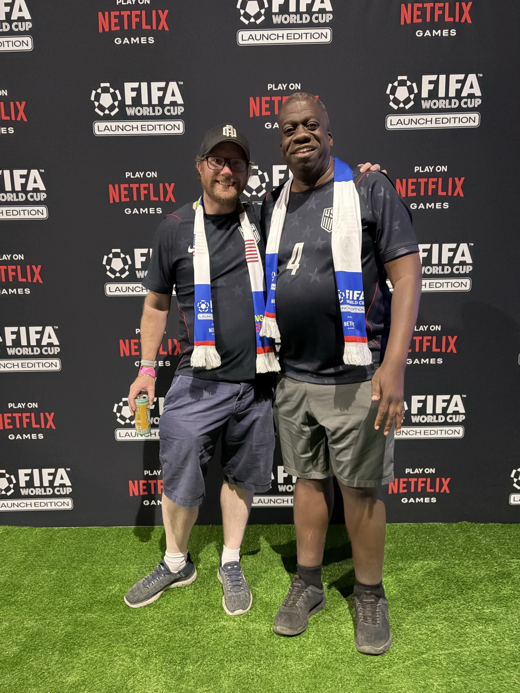
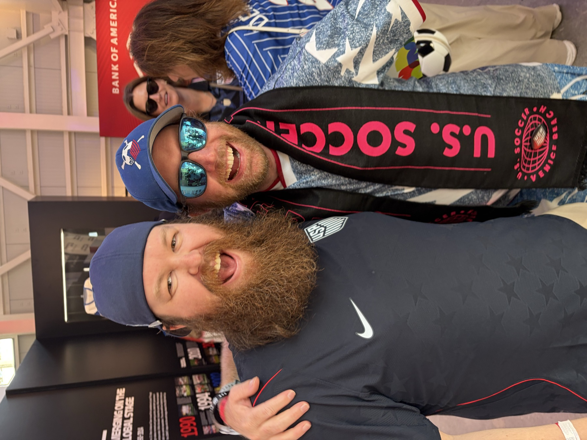
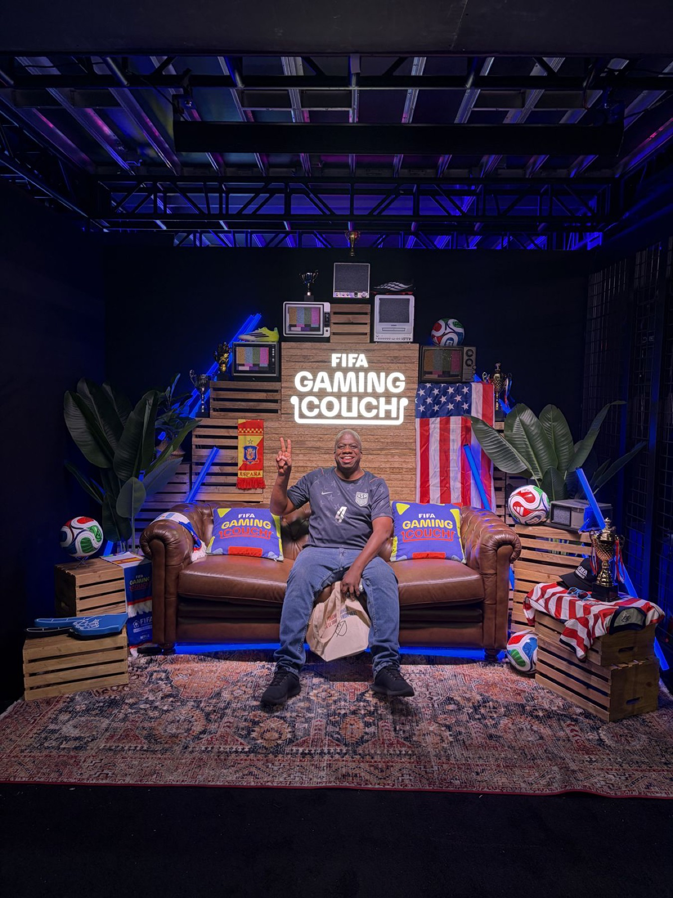
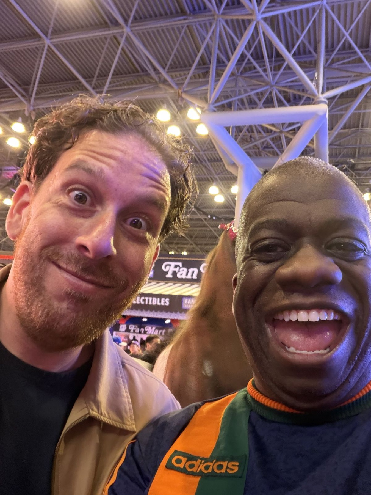
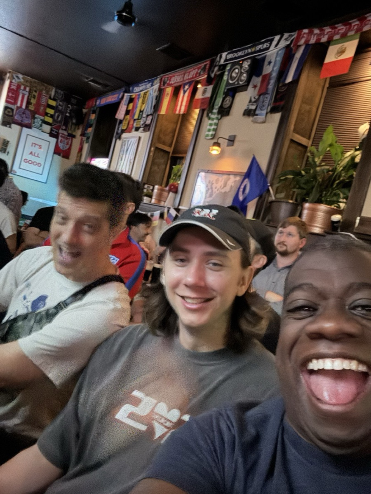
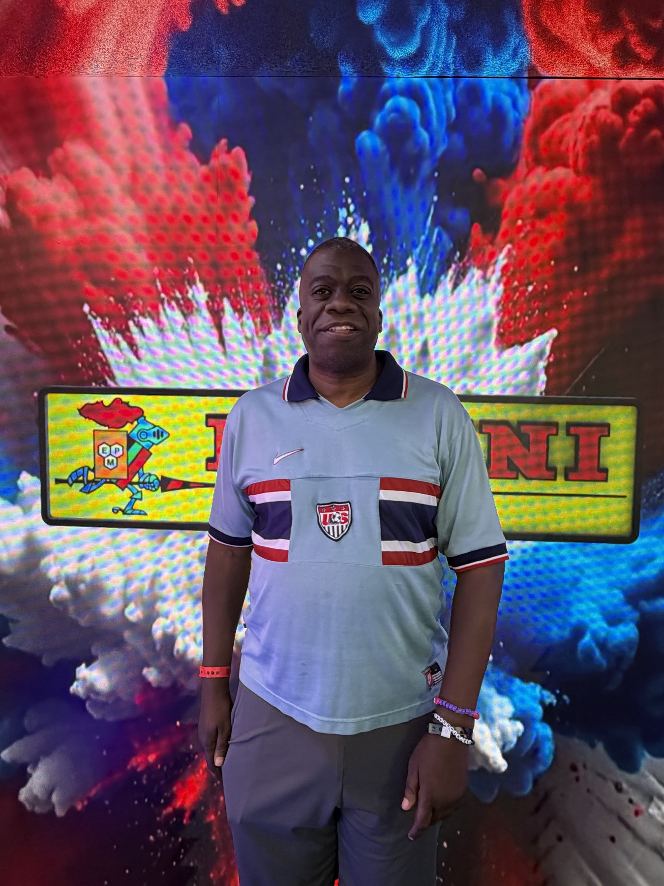
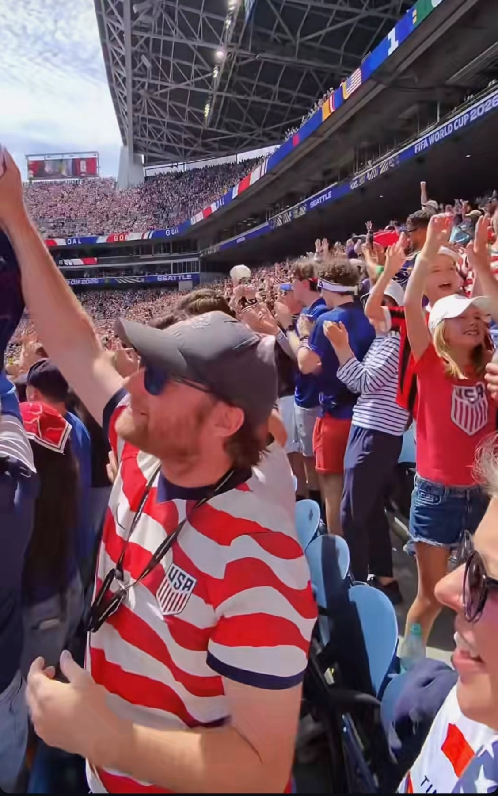
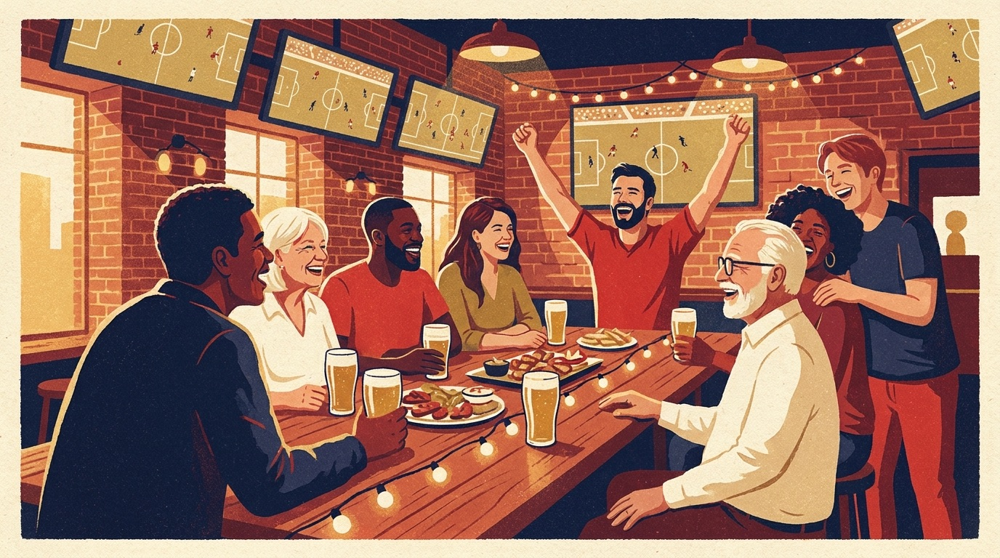

"Maybe the World Cup
was the friends we made
along the way."
The matches are on the other pages. This page is the people. One chapter each, with the real texts, because in the tournament of AI fakes and manufactured moments, everything here actually happened, to us, this summer.
If you're on this page, you already know which chapter is yours. It has your name on it.
G
The whole summer, dealt onto the table.
Full color, nothing staged, nothing generated. Tap any photo to hold it up to the light.


{kind=link}

{kind=link}

{kind=link}



{kind=link}

{kind=link}



{kind=link}

{kind=link}

{kind=link}

Quinn.
Quinn Hovey and I have been collecting US Soccer chapters for sixteen years, always in our American Outlaws colors. When the World Cup finally came home, opening day was ours: US Soccer House in Venice ("Hi 👋 from US Soccer House"), the USMNT fan club meetup by the stadium, and by 9:33pm, "i am at American outlaws by sofi." The next night he walked into the opener itself, his ticket, his moment, while I held the watch down in West Hollywood and we lived it across one long text thread. Two weeks later he drove up from San Diego and was back in the building for Türkiye while I sat with Pete.
Thank you for opening it and closing it with me, brother. Sixteen years and counting, and now with a home World Cup in the scrapbook.
Pete.
On June 7 a ticket transfer landed in my inbox from Pete Hines. On June 25 at 1:47pm he texted, "What time you heading this way to GO TO THE WORLD CUP?!?!" and a few hours later I was texting half my phone book, "Not me crying in an uber on the way to a soccer game." Pete and I have been watching this team together since a Seattle restaurant bar in the PAX years. This time it was seats inside a home World Cup, and at some point in the second half the videoboard put our names up with the Super Supporters, GORDON BELLAMY right above PETE HINES, which is exactly the right order of a sentence that says who got whom to the game.
Pete: fifty years of loving this game, and you are the friend who put me inside it. I will never fully have the words. This page is the attempt.
Andy, and the Delphi crew.
My first World Cup match ever was a last-minute gift. Andy Kleinman invited me into Delphi Interactive's hospitality box for Switzerland v Bosnia on June 18, and I walked in at Entry 12 wearing the number 4. I texted Brennan from inside: "Hiii from your Dad living his best intentional life at at the World Cup for the first time." The double "at" stays. That is what my thumbs do when I am that happy. Casper was in the DELPHI cap, Theo was there, and Martin Blencowe filmed a Cameo video with me for Brennan from the box, mid-match, because apparently that is a thing that can happen at a World Cup now.
A month later in New York, at Fanatics Fan Fest during Final week, I found Andy on the floor and sat on the same Netflix FIFA gaming couch his company built. FIFA was one of my first credits ever. The circle does not close more perfectly than that.
Andy: you made my first one happen. That sentence will outlive both of us.
Mike.
Mike Morrow and I were 23 years old at the 1994 World Cup Draw in Las Vegas, two Harvard friends watching American soccer get its first real stage. Thirty-two years later the tournament came to his city, and Mike was inside Lumen Field for USA 2, Australia 0. His full-time scouting report, delivered with the flat honesty only a friendship that started at Harvard earns: "Scrappy. US deserved the win but they will have trouble getting to 16." He called it. I hate that he called it. I love that he called it.
Mike: from the draw room in Vegas to the noise in Seattle, you have been in this story longer than almost anyone. Here's to whatever room 2030 puts us in.
The Francksens, and all of Stoughton.
The knockout rounds belonged to Wisconsin. On June 30 I texted Eric: "i went to the Old Firehouse to watch soccer with the Stoughton community 🇳🇴". On July 1 we watched the USA's ten-man knockout win from the Dragon House itself, Eric and Crystal hosting, kids orbiting, history landing on the main screen. By July 5 I was reporting to friends, "When in Stoughton do as the Norwegian soccer team, wait for the end 😍🇳🇴", and by July 6, elimination day, "I'm here in the Norwegian town of Stoughton, WISCONSIN! where soccer fever has struck in the past 24 hours." A town with Norwegian flags on its porches watched Norway beat Brazil that same week. Nobody in Stoughton was okay. It was wonderful.
July 4 at the Dragon House happened too, and what Eric served stays between us and the grill, as is the law of that house.
Eric, Crystal, James, Henry, Oscar: you gave the middle of my World Cup a home. The Dragon House is now a soccer landmark and I do not make the rules.
Matt.
Matt Kramer opened the tournament on June 11 with "How excited are you for the World Cup to start today?!?" and opened elimination day, July 6, with "Oh I suppose I should say… MATCHDAY!!!" I answered with the only correct word: "MATCHDAY". A catcher knows the value of the routine call, made every time, no matter the inning. He never missed one.
Matt: the liturgy mattered. MATCHDAY, always.
Mason.
The night before my first World Cup match, the person I needed to tell was my best friend: "Mason Dayne Powell, I am in a Frameline picture on Friday and going to the World Cup Tomorrow!!! and want to talk to my best friend about ALL of it … it you." Some joys are not real until Mason has heard them. That is simply how the machine works.
Mason: every big thing in my life routes through you first. This one did too.
Foster.
Back on June 10, before a single ball had been kicked, Foster texted: "We've got our table booked for the big game." Five weeks out. That is Foster in one sentence: the person who holds the table so the rest of us can find our way to it. Final week was his 55th birthday week, and on July 18 we celebrated him over Brazilian churrasco while England and France played the wildest bronze medal game ever seen, 6-4, meat sweats and penalty nerves and the crew around one table. The next day, the Final, same city as the trophy.
Foster: forty years of you holding tables for me, in every sense. The Cup came to your city and you gave it a birthday party.
Brennan.
My son does not care about soccer. My son was in New York for the entire tournament, sat with me at a soccer bar, received a mid-match Cameo video from a World Cup hospitality box because his dad could not contain himself, and spent Final Sunday at the table anyway. The first text I sent from inside a World Cup stadium went to him: "Hiii from your Dad living his best intentional life at at the World Cup for the first time."
BrenBren: you showed up for me all summer for a game you do not even like. That is the strongest possible definition of family. The Mets are next, your terms.
Joe.
Joe is not a soccer person either, and Joe was married to one for an entire World Cup summer, which should qualify for some kind of medal. He kept the home front warm while I chased this thing through three time zones, listened to a great many recaps he did not ask for, and loved me through the whole arc, the crying uber included.
Joe: love a dub. You are mine.
The one-day friends.
Shaun, who I met at the Türkiye match, texted the next morning: "The World Cup is not for the weak... be great to see you in Santa Clara, Seattle, Los Angeles and beyond to support the USMNT!" A friend in Toronto promised, "We'll get you to another game when we advance all the way through the finals." Another friend spent early July asking the only truly important question of Final week: "Have u decided what jersey you're wearing to fan fest, and to the wc final watch?" And when the Balogun reprieve landed on July 5 and I blasted the news to about eighty of you in one hour, somebody answered with the finest sentence of the tournament: "open corruption? In our favor? We're finally a real soccer team 🥹"
To every one of you: this is what the site was for. The tournament made the noise. You made the meaning.
Your chapter missing? Your quote wrong? Your memory better than mine?
Text me, or email me and cc Darby, and this page will grow. It is a living document, like the friendships.
Add your moment
The group chat, forever scrolling.
On the loudest sports day of the year, my only text was about the venue for Dane's wedding. Six days later I stood at the front of it and married two of my favorite people. Some things are louder than a World Cup.